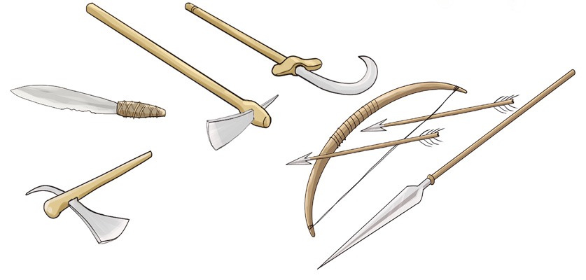

kuwinda na kujilinda dhidi ya wanyama wakali na maadui. Zana zingine za chuma ni mundu, ambayo ilitumika kwa ajili ya kufyeka na kusafisha maeneo kwa ajili ya kilimo. Vilevile, chuma kilitumika kutengenezea visu kwa ajili ya kuchunia wanyama na kukatia nyama. Majembe yalitumika kulimia na kuchimbia mizizi na wanyama wafukuao ardhi.
Baadhi ya zana za chuma ziliwekewa mipini ili kurahisisha matumizi yake. Zana za chuma zilileta mapinduzi makubwa katika sayansi na teknolojia asilia hasa katika kilimo, uwindaji, ulinzi na uvuvi kabla ya ukoloni. Kielelezo namba 9, kinawasilisha zana za chuma zenye mpini.

Baadhi ya jamii zilizojishughulisha na uzalishaji wa chuma ni Wanyambo, Wahaya, Wazinza, Wafipa, Wapare, Wasambaa, Wayao, Wangoni, Wahehe, Warongo na Wanyamwezi.